start
−Table of Contents

FAQ
Q: Do i need to install WinPcap?
A: No. Intercepter is delivered with a portable version of WinPcap.
A: No. Intercepter is delivered with a portable version of WinPcap.
Q: I dont see my adapter in list?
A: WinPcap does not support your card.
A: WinPcap does not support your card.
Q: Im running WiFi card and nothing works, even arp poison?
A: Switch to WiFi Mode (NIC icon at left from adapters list).
Also make sure that Stealth IP is able to connect to the Internet.
A: Switch to WiFi Mode (NIC icon at left from adapters list).
Also make sure that Stealth IP is able to connect to the Internet.
Q: ARP Poison works, but other MiTMs doesn't (Windows 7)
A: In rare situations the BFE service might block a local ports of Intercepter.
To solve this - disable BFE (Base Filtering Engine) service.
Also antiviruses like Avast might block it too, even when network shield is disabled at the control panel.
IF you are running WiFi connection and Internet Connection Sharing service runned, it may cause problems too.
A: In rare situations the BFE service might block a local ports of Intercepter.
To solve this - disable BFE (Base Filtering Engine) service.
Also antiviruses like Avast might block it too, even when network shield is disabled at the control panel.
IF you are running WiFi connection and Internet Connection Sharing service runned, it may cause problems too.
Q: What is 'Lock on Tray'?
A: With 'Lock on Tray' you'll be asked for password to restore the window from tray.
A: With 'Lock on Tray' you'll be asked for password to restore the window from tray.
Q: I minimized it to tray, but it asks for password. What password?
A: Default password is '4553', but you can change it in settings.cfg, it is encoded with base64.
A: Default password is '4553', but you can change it in settings.cfg, it is encoded with base64.
Q: What is 'Save Session'?
A: It means that Intercepter will save all received packets to pcap dump file, so you can do offline
analysis of data. It is also some kind of results exporting function.
A: It means that Intercepter will save all received packets to pcap dump file, so you can do offline
analysis of data. It is also some kind of results exporting function.
Q: What is 'Capture Only'?
A: It means that Intercepter will only save packets to dump file, without on-the-fly analyzing.
It is useful when you capture a lot of network data, to increase performance.
A: It means that Intercepter will only save packets to dump file, without on-the-fly analyzing.
It is useful when you capture a lot of network data, to increase performance.
Q: What is Resurrection?
A: If set, Intercepter reconstructs files from the network stream.
A: If set, Intercepter reconstructs files from the network stream.
Q: What is 'Promisc'?
A: If set, Intercepter opens network adapter in promiscuous-mode, to read all packets.
If not set, it only reads packets that are sent to the specified interface. Some Wi-Fi cards do not support it.
A: If set, Intercepter opens network adapter in promiscuous-mode, to read all packets.
If not set, it only reads packets that are sent to the specified interface. Some Wi-Fi cards do not support it.
Q: What is 'Spoof IP\MAC'?
A: All MiTM attacks in Intercepter use spoofing of ip\mac addresses. If you are using Wi-Fi interface then
you have to uncheck this option, because 99% of wifi drivers do not allow to send packets with
spoofed mac. Although you are no longer hidden with spoofed address, you are still able to perform any MiTM via wifi interface. That's more than nothing. USE WIFI-MODE instead of disabling spoofing at the preferences.
ps: you can change the spoofing mac in Expert Mode.
A: All MiTM attacks in Intercepter use spoofing of ip\mac addresses. If you are using Wi-Fi interface then
you have to uncheck this option, because 99% of wifi drivers do not allow to send packets with
spoofed mac. Although you are no longer hidden with spoofed address, you are still able to perform any MiTM via wifi interface. That's more than nothing. USE WIFI-MODE instead of disabling spoofing at the preferences.
ps: you can change the spoofing mac in Expert Mode.
Q: I have pcap dumps from airodump and kismet. Does Intercepter work with them?
A: Yes. It supports the 802.11 encapsulation.
A: Yes. It supports the 802.11 encapsulation.
Q: Are any other encapsulations supported?
A: Yes. PPPoE, GRE(PP2P) and 802.11 additional headers are supported too. It doesn't mean that Intercepter
can analyze encrypted data, it means that Intercepter is able to get clean ethernet\ip headers from that kind of packets
and analyze them.
A: Yes. PPPoE, GRE(PP2P) and 802.11 additional headers are supported too. It doesn't mean that Intercepter
can analyze encrypted data, it means that Intercepter is able to get clean ethernet\ip headers from that kind of packets
and analyze them.
Q: Why i can not see both the destination and the source UIN\MAIL\… in intercepted chat messages?
A: It is a limitation of protocols, not Intercepter's.
A: It is a limitation of protocols, not Intercepter's.
Articles and Press
Подмена файлов в HTTP
трафике
http://habrahabr.ru/post/149137/
Карманный перехват и восстановление файлов из трафика
http://habrahabr.ru/post/145037/
Актуальность атаки SMBRelay в современных Windows сетях
http://habrahabr.ru/post/142219/
Перехват WEB трафика через протокол WPAD при помощи Intercepter-NG
http://habrahabr.ru/post/141479/
Перехват пользовательских данных ANDROID приложения с помощью intercepter-ng и wireshark
http://pen-test.ru/perexvat-polzovatelskix-dannyx-android-prilozheniya-s-pomoshhyu-intercepter-ng-i-wireshark/
О «карманном» перехвате в предпоследний раз
http://habrahabr.ru/post/161507/
Spying Live Messenger MSN on Linux
http://www.villacorp.com/blog/2012/09/spying-live-messenger-msn-on-linux/
Spying Live Messenger MSN on Android
http://www.villacorp.com/blog/2012/09/spying-live-messenger-msn-on-android/
Spying Live Messenger MSN on iPhone & iPad
http://www.villacorp.com/blog/2012/09/spying-live-messenger-msn-on-iphone-ipad/
Windows Live Messenger Spying
http://www.villacorp.com/blog/2012/08/windows-live-messenger-spying/
100% Virus Free Podcast #43 - Интервью с автором сетевого анализатора Intercepter-NG (mp3, russian language)
http://www.esetnod32.ru/.company/podcast/
http://habrahabr.ru/post/149137/
Карманный перехват и восстановление файлов из трафика
http://habrahabr.ru/post/145037/
Актуальность атаки SMBRelay в современных Windows сетях
http://habrahabr.ru/post/142219/
Перехват WEB трафика через протокол WPAD при помощи Intercepter-NG
http://habrahabr.ru/post/141479/
Перехват пользовательских данных ANDROID приложения с помощью intercepter-ng и wireshark
http://pen-test.ru/perexvat-polzovatelskix-dannyx-android-prilozheniya-s-pomoshhyu-intercepter-ng-i-wireshark/
О «карманном» перехвате в предпоследний раз
http://habrahabr.ru/post/161507/
Spying Live Messenger MSN on Linux
http://www.villacorp.com/blog/2012/09/spying-live-messenger-msn-on-linux/
Spying Live Messenger MSN on Android
http://www.villacorp.com/blog/2012/09/spying-live-messenger-msn-on-android/
Spying Live Messenger MSN on iPhone & iPad
http://www.villacorp.com/blog/2012/09/spying-live-messenger-msn-on-iphone-ipad/
Windows Live Messenger Spying
http://www.villacorp.com/blog/2012/08/windows-live-messenger-spying/
100% Virus Free Podcast #43 - Интервью с автором сетевого анализатора Intercepter-NG (mp3, russian language)
http://www.esetnod32.ru/.company/podcast/
Tips and Tricks
1. First of all select the network adapter that you are going to sniff. Then press the “Start” button (a blue triangle). If you have
a wireless card that doesn't support promiscuous mode - uncheck the “Promisc” checkbox.
a wireless card that doesn't support promiscuous mode - uncheck the “Promisc” checkbox.
2. By default the “Grid View” and the “Unique Data” checkboxes are checked. It means that the password tab will look
like a grid with data (unique data). To see full detailed information uncheck the “Grid View”.
like a grid with data (unique data). To see full detailed information uncheck the “Grid View”.
3. Uncheck the “Resolve Hosts” if you are going to do offline-analysis of pcap dump. This will speed-up the process.
4. To copy data from password's grid - click on a row and press ctrl+c.
5. To hide the window use Ctrl+Alt+S hotkey. Press again to unhide it.
6. Autosave - all text information will be saved each 10 seconds.
7. Using pcap filter you can set up your own rules for traffic filtering. See pcap filtering syntax for details.
example:
example:
port 80 - receive only packets with tcp port 80 from kernel.
not port 80 - exclude packets with port 80
You can combine the rules: port 80 and not port 25
not port 80 - exclude packets with port 80
You can combine the rules: port 80 and not port 25
8. If you found a bug, that crashes the program, and you know what protocol causing it, you may exclude it
with pcap filter. For example, if Intercepter crashes on high mail traffic, you can disable it by rule : not port 25 and not port 110.
with pcap filter. For example, if Intercepter crashes on high mail traffic, you can disable it by rule : not port 25 and not port 110.
9. Intercepter can run even on win9x (98 and 95!), but you should install WinPcap 3.1 or WinPcap 4.0beta2.
New builds of WinPcap do not support win9x.
New builds of WinPcap do not support win9x.
10. Console mode for offline analysis:
./intercepter -t dump.cap
./intercepter -t dump.cap
11. To activate auto-sniffing you have to open settings.cfg and edit 'autorun'. Default value is 0, change it to the number of interface
that you are going to sniff.
that you are going to sniff.
12. Intercepter converts pcap dumps with Raw IP Data encapsulation to Ethernet encapsulation (adding ethernet header information).
13. Intercepter is able to read a new Wireshark format - pcapng.
Since every pcapng captures by Wireshark are using only “Enhanced Packet Block” type, Intercepter support only this kind of packet blocks.
In addition it shows comments to the packets.
Since every pcapng captures by Wireshark are using only “Enhanced Packet Block” type, Intercepter support only this kind of packet blocks.
In addition it shows comments to the packets.
IMPORTANT
If Intercepter faults while working you can help me fix it.
Make sure that the resolving option is set on (it enables debugging feature).
After program crashes, there is a file with name crash.cap with the last saved packet, just mail it to intercepter.mail@gmail.com.
If Intercepter faults while working you can help me fix it.
Make sure that the resolving option is set on (it enables debugging feature).
After program crashes, there is a file with name crash.cap with the last saved packet, just mail it to intercepter.mail@gmail.com.
Tutorials
MiTMs: How to start
First, scan network and choose the targets.
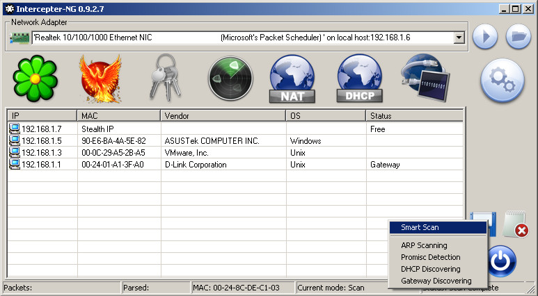
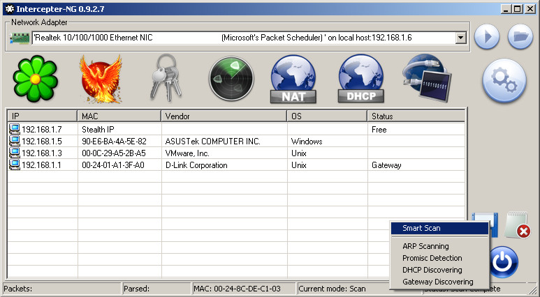
Add them to NAT
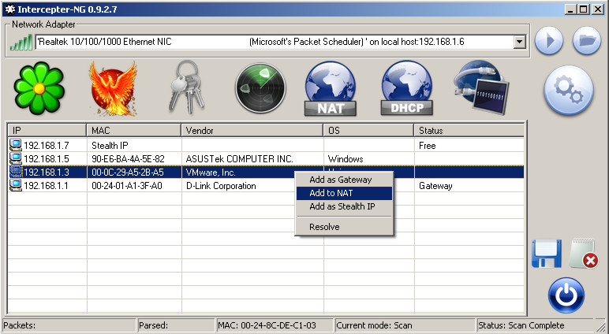
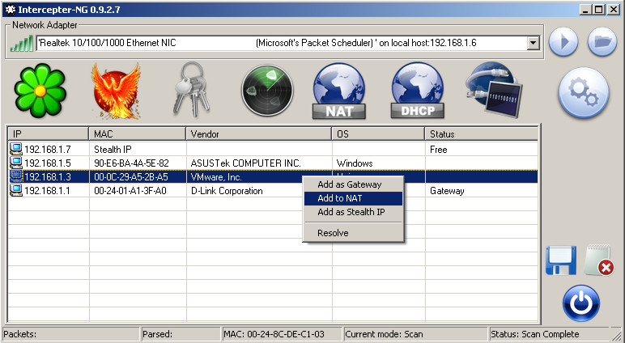
Start sniffing and run ARP Poison (or check any other MiTMs at your choice)
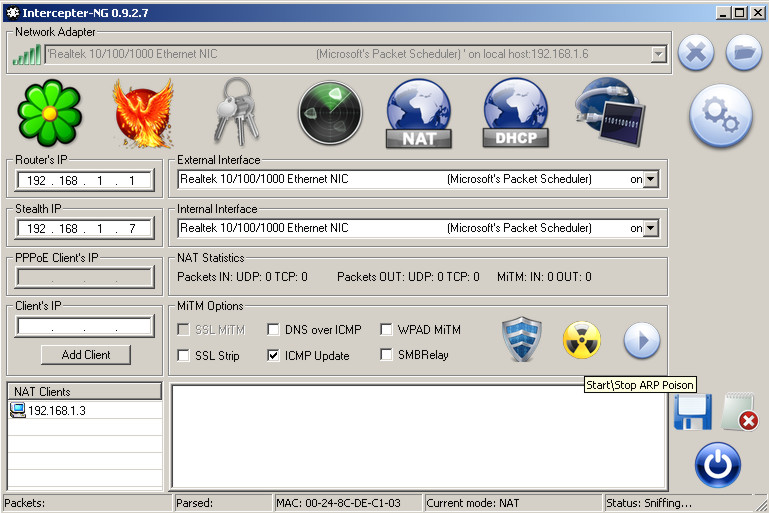
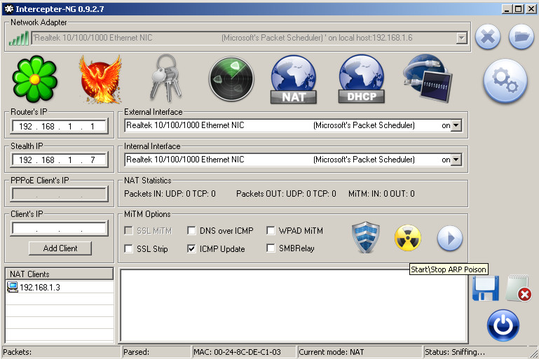
Working with Wi-Fi
Everything is the same, but you have to switch to Wi-Fi Mode by clicking on NIC icon
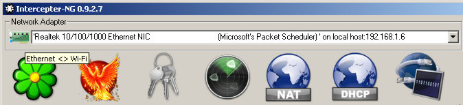
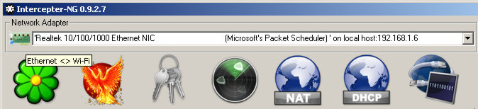
Offline analysis of pcap captures
You have many options that might slow down or speed up the time of analysis.
1. First of all, if you need to read a real big .pcap file, then turn off 'Resolve' option.
2. If your .pcap contain big files and resurrection is on, the speed might fall down.
The solution is to set the limit of maximal file size for resurrection feature.
3. If you dont need anything to be resurrected, then turn this option off in settings. The speed would be increased.
4. If you need only specific protocol for analysis, for example ICQ\AIM or only HTTP, then set the proper filter in
'pcap filter' from RAW MODE: tcp port xxx, where xxx is the port number of your protocol.
5. You can load more than one capture for analysis. In Open Dialog select multiply files, each of them will be analyzied one by one.
1. First of all, if you need to read a real big .pcap file, then turn off 'Resolve' option.
2. If your .pcap contain big files and resurrection is on, the speed might fall down.
The solution is to set the limit of maximal file size for resurrection feature.
3. If you dont need anything to be resurrected, then turn this option off in settings. The speed would be increased.
4. If you need only specific protocol for analysis, for example ICQ\AIM or only HTTP, then set the proper filter in
'pcap filter' from RAW MODE: tcp port xxx, where xxx is the port number of your protocol.
5. You can load more than one capture for analysis. In Open Dialog select multiply files, each of them will be analyzied one by one.
Sniffer
Passwords
ICQ\AIM
Default auth method with XORed password + secure MD5 login hash.
Default auth method with XORed password + secure MD5 login hash.
IRC\BNC
Joining keyed (+k) channels like 'join #chan pwd'. Also it sniffs nickserv\chanserv identify messages and
bouncers authorization (bnc\psybnc)
Joining keyed (+k) channels like 'join #chan pwd'. Also it sniffs nickserv\chanserv identify messages and
bouncers authorization (bnc\psybnc)
FTP\SMTP\POP3\IMAP\LDAP\NNTP\CVS\TELNET\MRA\DC++\SOCKS
Plain-text authorization.
POP3\SMTP\IMAP CRAM-MD5 Challenge+Response hash.
POP3 APOP-MD5 Challenge+Response hash.
Plain-text authorization.
POP3\SMTP\IMAP CRAM-MD5 Challenge+Response hash.
POP3 APOP-MD5 Challenge+Response hash.
HTTP\WWW
WWW - basic authorization (.htaccess).
HTTP - POST requests.
Cookies are saved too (optionally). Might be replayed in browser.
WWW - basic authorization (.htaccess).
HTTP - POST requests.
Cookies are saved too (optionally). Might be replayed in browser.
VNC\MYSQL\ORACLE
VNC - Challange+Response hashes.
MYSQL - SHA1 Challange+Response hashes.
ORACLE - DES Challange+Response hashes.
VNC - Challange+Response hashes.
MYSQL - SHA1 Challange+Response hashes.
ORACLE - DES Challange+Response hashes.
MiTM techniques allow to intercept HTTPS\POP3S\SMTPS\IMAPS
authorizations.
Messengers
ICQ\AIM\JABBER
Almost all messages decoded correctly.
Supported text encodings: UTF8, UTF16, RTF (rich-text format).
Almost all messages decoded correctly.
Supported text encodings: UTF8, UTF16, RTF (rich-text format).
IRC\MRA\YAHOO\MSN
Should work perfectly. For IRC only chat messages are saved (no parts\joins etc…).
Should work perfectly. For IRC only chat messages are saved (no parts\joins etc…).
LAN Operations
Smart Scanning:
It combines ARP Scanning and Gateway Discovering.
In addition it shows Stealth IP and automatically sets gateway's ip (if it was detected) and stealth ip to the
IP fields in the NAT. Also it perform OS detection method based on TTL values.
In addition it shows Stealth IP and automatically sets gateway's ip (if it was detected) and stealth ip to the
IP fields in the NAT. Also it perform OS detection method based on TTL values.
ARP Scanning:
Simply checks the C-class subnet assigned to selected ethernet adapter. For example if your IP is 192.168.0.10
then it will check 255 IP addresses in range 192.168.0.1-255.
update: starting from 0.9.5 it checks for netmask to do proper scan of all subnets
Simply checks the C-class subnet assigned to selected ethernet adapter. For example if your IP is 192.168.0.10
then it will check 255 IP addresses in range 192.168.0.1-255.
update: starting from 0.9.5 it checks for netmask to do proper scan of all subnets
DHCP
Discovering:
Sends DHCP-Discovery broadcast messages and waits for answers from DHCP servers.
If some servers responded, adds them to the list.
Sends DHCP-Discovery broadcast messages and waits for answers from DHCP servers.
If some servers responded, adds them to the list.
Promiscuous-mode scanning:
Sends special ARP requests to the network. Responding hosts obviously are sniffers.
Some ethernet cards may answer too (3COM).
Sends special ARP requests to the network. Responding hosts obviously are sniffers.
Some ethernet cards may answer too (3COM).
Gateway Discovering:
Sends SYN packet through all hosts on the net, if there is a gateway, the reply will be sent back.
Sends SYN packet through all hosts on the net, if there is a gateway, the reply will be sent back.
ARP Defender:
Built-in personal ARP Watch service. First you should perform ARP Scanning to fill the list of white ('clean')
MAC addresses. If anyone tries to poison your arp cache - a warning message will appear.
Built-in personal ARP Watch service. First you should perform ARP Scanning to fill the list of white ('clean')
MAC addresses. If anyone tries to poison your arp cache - a warning message will appear.
ARP Cage:
Isolates target IP addresses from another local hosts by spoofing arp table entries.
Isolates target IP addresses from another local hosts by spoofing arp table entries.
Modes
RAW
This is a pure sniffer with appearance similar to Wireshark.
It has enough functionality to perform a quick research of the network traffic.
It is also able to filter the packets by powerful pcap filtering rules
and more than that, you are able to do 'Follow TCP stream' for detailed analysis of the specified session.
It has enough functionality to perform a quick research of the network traffic.
It is also able to filter the packets by powerful pcap filtering rules
and more than that, you are able to do 'Follow TCP stream' for detailed analysis of the specified session.
Do not operate with huge dumps: Intercepter loads every packet into the memory and it does not use a hard disk for swapping.
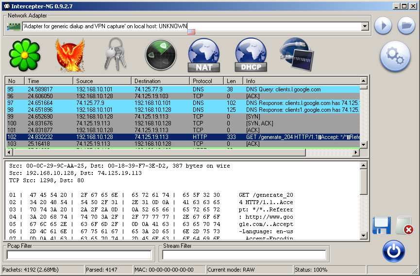
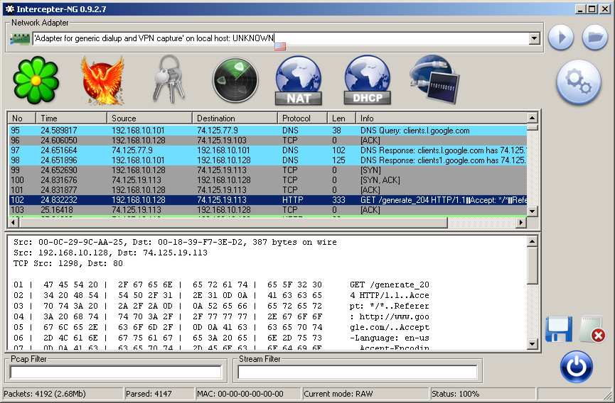
eXtreme
The typical workflow for the sniffer is analyzing pre-defined ports, associated with specified protocols.
If we say http, we mean 80 port (or 8080 or whatever defined in the ports list associated with http protocol).
Thus only these ports will be analyzed.
If some application uses different port, for example 1234, then the sniffer will not analyze packets that go
through it.
In eXtreme mode Intercepter will analyze all TCP packets without checking ports. So, even if some application uses
undefined port, the sniffer will check those packets anyway.
If we say http, we mean 80 port (or 8080 or whatever defined in the ports list associated with http protocol).
Thus only these ports will be analyzed.
If some application uses different port, for example 1234, then the sniffer will not analyze packets that go
through it.
In eXtreme mode Intercepter will analyze all TCP packets without checking ports. So, even if some application uses
undefined port, the sniffer will check those packets anyway.
Though it slows down the performance (it's necessary to check much more packets than usually) and it may detect
wrong data or miss the right protocol (for example FTP and POP3 use the same authorization style)
it gives an ability to find and intercept interesting data on undefined ports.
Use it at your own risk, don't be surprized if something goes wrong while the eXtreme mode is turned on.
wrong data or miss the right protocol (for example FTP and POP3 use the same authorization style)
it gives an ability to find and intercept interesting data on undefined ports.
Use it at your own risk, don't be surprized if something goes wrong while the eXtreme mode is turned on.
Remote Traffic Capturing
Libpcap gives you an ability to transfer network data from one host to another through it's own protocol
named RPCAP. I.e. you can set up rpcap daemon on your gateway and see all traffic that goes through it.
named RPCAP. I.e. you can set up rpcap daemon on your gateway and see all traffic that goes through it.
Installing rpcapd on Windows:
Download WinPcap package and install it.
(Default path to rpcapd is C:\Program Files\Winpcap\rpcapd.exe)
Then execute “rpcapd.exe -n” from command line.
(Default path to rpcapd is C:\Program Files\Winpcap\rpcapd.exe)
Then execute “rpcapd.exe -n” from command line.
-n key allows anonymous access to daemon, withouth password
Installing rpcapd on Unix:
Download developer's pack of winpcap from www.winpcap.org
and unzip it. Change current directory to libpcap and perfom the following commands
Download developer's pack of winpcap from www.winpcap.org
and unzip it. Change current directory to libpcap and perfom the following commands
$autoconf
$./configure
$make
$cd rpcapd
$make
$./configure
$make
$cd rpcapd
$make
To start daemon run ./rpcapd -n
This should work on Linux and Freebsd as well.
This should work on Linux and Freebsd as well.
When daemon is running you can start remote capturing from 0x4553-Intercepter.
Enter hostname or IP address of daemon in the special field and then choose adapter from the list.
Then you should set “not host IP” filter, change IP to IP address assigned to your ethernet card (we need this
to ignore rpcap traffic between you and daemon).
Enter hostname or IP address of daemon in the special field and then choose adapter from the list.
Then you should set “not host IP” filter, change IP to IP address assigned to your ethernet card (we need this
to ignore rpcap traffic between you and daemon).
Everything is ready and now you can click the Start button.
PS: In FreeBSD 6.x (and maybe 5 or 7) you may face some problems while compiling rpcapd from sources.
You should make changes in some files and rename 'string.h' to 'strings.h'.
You should make changes in some files and rename 'string.h' to 'strings.h'.
pcap-new.c
pcap-remote.c
sock-utils.c
pcap-pf.c
daemon.c
rpcapd.c
pcap-remote.c
sock-utils.c
pcap-pf.c
daemon.c
rpcapd.c
I noticed that building rpcapd from sources doesnt work good in Linux. A better way is to use precompiled
static binary that works well. You can get it here http://sniff.su/rpcapd.gz
static binary that works well. You can get it here http://sniff.su/rpcapd.gz
Known issues:
rpcapd might crash if something like the following is present on the system
rpcapd might crash if something like the following is present on the system
#ifconfig
…
…
'lo Link encap:Local Loopback'
…
…
do #ifconfig lo down
and try again, this might help.
and try again, this might help.
PCAP Over IP
You dont need rpcapd any more to capture traffic from remote pc. Almost all of unix OSes
has tcpdump and netcat. The idea of this method is to launch capturing process on the host and
redirect the stream to remote host via netcat. So Intercepter is going to be a port listener taking incoming connection.
Few examples of how you can perform transfer of packets via tcp channel.
#cat log.cap | nc IP PORT
#tcpdump -i face -w - not port PORT| nc IP PORT
#dumpcap -i face -P -w - | nc IP PORT
IP and PORT are the values where Intercepter runned.
-P option of dumpcap is to send packets in original libpcap format, not pcapng.
has tcpdump and netcat. The idea of this method is to launch capturing process on the host and
redirect the stream to remote host via netcat. So Intercepter is going to be a port listener taking incoming connection.
Few examples of how you can perform transfer of packets via tcp channel.
#cat log.cap | nc IP PORT
#tcpdump -i face -w - not port PORT| nc IP PORT
#dumpcap -i face -P -w - | nc IP PORT
IP and PORT are the values where Intercepter runned.
-P option of dumpcap is to send packets in original libpcap format, not pcapng.
DHCP
You can use it as a simple DHCP
server. To perform DHCP
MiTM look for another section.
NAT
Translates ICMP\UDP\TCP packets from Ethernet to Ethernet areas.
Long outgoing packets (up to MTU size) are fragmented and MSS tracking is performed.
FTP Active mode is also available.
Long outgoing packets (up to MTU size) are fragmented and MSS tracking is performed.
FTP Active mode is also available.
Etnernet <> Ethernet
In the 'External interface' choose network card that is connected to the external network.
In the 'Internal' choose the device connected to the local area you are going to translate.
Enter IP address of the default gateway from your external interface into the 'Router's IP' field.
Enter IP addresses of the local area's clients into the 'Client's IP' field.
In the 'External interface' choose network card that is connected to the external network.
In the 'Internal' choose the device connected to the local area you are going to translate.
Enter IP address of the default gateway from your external interface into the 'Router's IP' field.
Enter IP addresses of the local area's clients into the 'Client's IP' field.
Each 3 minutes 'old' entries are removed.
'Promisc' flag controls the mode of opening ethernet interfaces.
In case of Wi-Fi cards you may unmark the flag if promiscuous mode is not supported by the card.
'FTP' flag controls translation of FTP Active mode.
'Promisc' flag controls the mode of opening ethernet interfaces.
In case of Wi-Fi cards you may unmark the flag if promiscuous mode is not supported by the card.
'FTP' flag controls translation of FTP Active mode.
There is an option to enable pure IP Forward mode. No MiTMs available in this mode, but it allows to
start arp poisoning in situation when you can not use Stealth IP.
It is usually necessary when the gateway have a white list of legit computers in the network
so NAT can not work correctly.
Resurrection
This new feature reconstructs files from the network stream. Supported protocols are: HTTP\FTP\SMB\IMAP\POP3\SMTP.
Only completed tcp sequences are saved. Session may consist of lost\retransmitted frames.
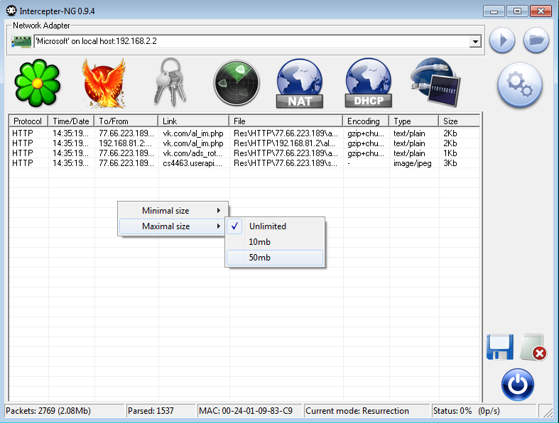
Only completed tcp sequences are saved. Session may consist of lost\retransmitted frames.
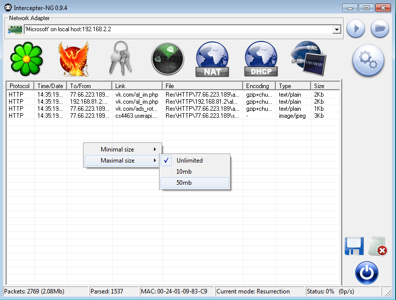
MiTMs
ARP Poison
Classic attack. Peform ARP Scanning, choose targets, choose gateway, choose stealth ip and run!
For automated discovering of the gateway and stealth ip use Smart Scanning.
For automated discovering of the gateway and stealth ip use Smart Scanning.
ps: make sure IPEnableRouter is set to 0 (default).
Spoofing
Spoofing mode that allow to redirect hosts to the given IP.
DNS\NBNS\LLMNR protocols are supported.
With DNS you can specify a mask to direct all subdomains too.
Normally you set a pair with domain.com:IP, but subdomains will not be spoofed.
To redirect all of them put * before domain name: *host.com
DNS\NBNS\LLMNR protocols are supported.
With DNS you can specify a mask to direct all subdomains too.
Normally you set a pair with domain.com:IP, but subdomains will not be spoofed.
To redirect all of them put * before domain name: *host.com
ICMP Redirect
*NOTICE* this section is no longer actual, it remains from old 0x4553-Intercepter, but it gives detailed description of the MiTM itself.
Tested against Windows XP and OpenSuse\BackTrack Linux
You have 4 IP fields that you need to fill with the right addresses.
The first is 'Original Gateway'. You have to enter default gateway of the target host that you are going to attack.
The second is 'Target IP', the one you are going to sniff.
The third is 'New record'. This is the destination IP. If you want to sniff data between your TARGET and some SECRET-SITE.COM,
you have to resolve it and enter it's IP. So, if SECRET-SITE.COM's IP is equal to 1.2.3.4 then 'New Record' is 1.2.3.4.
The last field is 'New Gateway'. This is your own address that resides in the same ethernet area.
The second is 'Target IP', the one you are going to sniff.
The third is 'New record'. This is the destination IP. If you want to sniff data between your TARGET and some SECRET-SITE.COM,
you have to resolve it and enter it's IP. So, if SECRET-SITE.COM's IP is equal to 1.2.3.4 then 'New Record' is 1.2.3.4.
The last field is 'New Gateway'. This is your own address that resides in the same ethernet area.
After the attack is performed, an enemy host will send all packets to the 'new record' via 'new gateway'. To route and successfully intercept this traffic you have
to run NAT with proper configuration before the attack.
to run NAT with proper configuration before the attack.
NOTICE: This MiTM attack is not like any other. You can't intercept all traffic between the target and the gateway, you can only sniff single hosts by
adding 'new records' to taget's routing table. Make sure that you know what to do .
adding 'new records' to taget's routing table. Make sure that you know what to do .
ICMP Redirect has one limitation. You cannot redirect IPs from 192.168.1.x if your victim's IP belongs to 192.168.1.x. ,
it should be different.
it should be different.
DNS over ICMP Redirect
This is a completely new technique, not referenced or realized before. It is based on the same old ICMP Redirect MiTM, but opens a new wide way for
data sniffing. The first steps of the attack are similiar to classic ICMP Redirect, but there is one important difference.
So called 'new record' is the DNS server of the victim. We are going to take control over all DNS requests and do some magic before the victim receives
replies.
data sniffing. The first steps of the attack are similiar to classic ICMP Redirect, but there is one important difference.
So called 'new record' is the DNS server of the victim. We are going to take control over all DNS requests and do some magic before the victim receives
replies.
Example:
When we are resolving somehost.com, DNS sends us a reply containing one or more answers with IPs of somehost.com.
Moreover, it may contain 'additional' answers and we are going to take care of them too.
When we are resolving somehost.com, DNS sends us a reply containing one or more answers with IPs of somehost.com.
Moreover, it may contain 'additional' answers and we are going to take care of them too.
After the first part of attack is complete, the victim starts to send all DNS
requests through the attacker's host (NAT).
When NAT receives a reply from DNS, it reads all IPs and then sends ICMP Redirect messages with resolved IPs to victim.
So by the time NAT sends DNS reply back to victim, his routing table already has entries for all resolved addresses that point to our host!
It means, that we are sniffing not only the victim's DNS, but everything that is resolved through.
When NAT receives a reply from DNS, it reads all IPs and then sends ICMP Redirect messages with resolved IPs to victim.
So by the time NAT sends DNS reply back to victim, his routing table already has entries for all resolved addresses that point to our host!
It means, that we are sniffing not only the victim's DNS, but everything that is resolved through.
All traffic is spoofed with fake IP\MAC.
This part of attack is performed on NAT's side, that's why you should configure it properly.
Check 'DNS over ICMP' checkbox, then fill:
Router's IP - ip of the default gateway that the victim uses.
Client's IP - ip of the victim. You can add multiple targets, but don't forget to send first ICMP Redirect packet to every target from Intercepter.
After adding clients you have to put free\unused IP to 'New Gateway' field and to the 'Stealth IP'.
Check 'DNS over ICMP' checkbox, then fill:
Router's IP - ip of the default gateway that the victim uses.
Client's IP - ip of the victim. You can add multiple targets, but don't forget to send first ICMP Redirect packet to every target from Intercepter.
After adding clients you have to put free\unused IP to 'New Gateway' field and to the 'Stealth IP'.
Choose adapters, they should be the same because we are going to route traffic in the same ethernet area.
Start NAT.
All DNS answers are saved to the special list and NAT resends ICMP redirects every time 'timeout' is reached.
In the end you have to do one more action. You cannot perform 'healing' of the victim's routing table (as in arp poison), that's why you should
uncheck 'DNS ↔ ICMP' checkbox to prevent resending of ICMP redirections and wait for about 10-15 minutes. After that no new entries will be added, but the old ones will work fine through
NAT, until they expire.
Start NAT.
All DNS answers are saved to the special list and NAT resends ICMP redirects every time 'timeout' is reached.
In the end you have to do one more action. You cannot perform 'healing' of the victim's routing table (as in arp poison), that's why you should
uncheck 'DNS ↔ ICMP' checkbox to prevent resending of ICMP redirections and wait for about 10-15 minutes. After that no new entries will be added, but the old ones will work fine through
NAT, until they expire.
DHCP
All fields in DHCP
Mode are self-explained. One thing that you have to change from default value is the DNS
server.
After the server has started, it will assign every new client to the virtual subnet, so you have to run NAT to continue
communication with outer world.
After the server has started, it will assign every new client to the virtual subnet, so you have to run NAT to continue
communication with outer world.
SSL MiTM + SSLStrip
SSL MiTM
To intercept encrypted data you have to perform any of the presented attacks by your choice:
- ARP
- DNS over ICMP
- DHCP
Supported protocols are:
- HTTPS - 443
- POP3S - 995
- SMTPS - 465
- IMAPS - 993
In addition to this, you are able to choose any other protocol that uses SSL.
To do it you have to set your port to 'Extra SSL port' and tell whether it is 'send' or a 'write' protocol.
To do it you have to set your port to 'Extra SSL port' and tell whether it is 'send' or a 'write' protocol.
'write' means that the client is the one to send the data. For example, in HTTPS: the client sends GET first and then the server replies.
'read' means the opposite - server sends the data first, like in SMPTS: the server first sends welcome message to the client.
'read' means the opposite - server sends the data first, like in SMPTS: the server first sends welcome message to the client.
To set the type of protocol just add 'w' or 'r'.
If you want to sniff 1234 port (https or other type), then the value
should be '1234w' . For non unconventional pop3s port set the value to '1234r'.
If you want to sniff 1234 port (https or other type), then the value
should be '1234w' . For non unconventional pop3s port set the value to '1234r'.
By default client's outgoing traffic is saved to 'log_ssl.txt'.
For HTTPS and other 'write' protocols Intercepter uses 'on-the-fly' certificate generating to communicate with victim, in other cases
it uses static server.key\.crt
For HTTPS and other 'write' protocols Intercepter uses 'on-the-fly' certificate generating to communicate with victim, in other cases
it uses static server.key\.crt
WARNING: if NAT shows errors while sending packets - turn off TCP Segmentation Offload.
Go through registry and find the values:
LsoOffload - XP\2k
LsoV2IPv4 - win7
If it doesn't help set DWORD DisableTaskOffload=1 in \\HKEY_LOCAL_MACHINE\SYSTEM\CurrentControlSet\Services\Tcpip\Parameters
LsoOffload - XP\2k
LsoV2IPv4 - win7
If it doesn't help set DWORD DisableTaskOffload=1 in \\HKEY_LOCAL_MACHINE\SYSTEM\CurrentControlSet\Services\Tcpip\Parameters
Set their value to 0.
SSL Strip
This is native realization of sslstrip for Windows, that can be combined with SSL
MiTM too.
It strips all https links, replaces cookies to 'HttpOnly' from 'Secure' and changes favicon to the 'lock'.
It strips all https links, replaces cookies to 'HttpOnly' from 'Secure' and changes favicon to the 'lock'.
Cookie Killer is an option of SSL
Strip that resets target's http sessions to redirect them to the authorization page, thus we can intercepter it.
It simply clears the cookie of existing session by sending Set-Cookie: cookie1=; with Expiration date that is expired yet. Some sites and some browsers may act different,
so it wont work everywhere with the same success.
It simply clears the cookie of existing session by sending Set-Cookie: cookie1=; with Expiration date that is expired yet. Some sites and some browsers may act different,
so it wont work everywhere with the same success.
WPAD
WPAD stands for “WebProxy Autodiscovering Protocol” which corresponds to “Automatically detect settings” feature in modern browsers.
This feature allows the browser obtain current proxy configuration without user's intervention.
This feature allows the browser obtain current proxy configuration without user's intervention.
It is a threat even today and an attacker can easily set up malicious proxy server to intercept web traffic.
The situation is aggravated by the fact that Internet Explorer (and Chrome too) supports this feature by default.
The situation is aggravated by the fact that Internet Explorer (and Chrome too) supports this feature by default.
Usualy WPAD is not configured in the network, so normal behaviour of browsers is to send NetBios requests for the
name 'WPAD' (skipping DHCP and DNS methods). If an answer is not received then the browser simply uses direct connection,
but if the answer is received the browser tries to download configuration file from http:/ip_of_wpad_host/wpad.dat.
name 'WPAD' (skipping DHCP and DNS methods). If an answer is not received then the browser simply uses direct connection,
but if the answer is received the browser tries to download configuration file from http:/ip_of_wpad_host/wpad.dat.
Intercepter-NG will answer every request and tell the clients to use it's own configuration, so that it could
sniff traffic through proxy server.
sniff traffic through proxy server.
You can setup your own configuration of any other proxy server in the network, or just choose the built-in proxy server.
ps: built-in proxy server allows to use http injection feature.
ps: built-in proxy server allows to use http injection feature.
SSH
This incredible feature appeared in the latest versions of Intercepter.
You are able to catch SSH authorization data (login\password)
and track every command executed during remote session.
It supports 2 authentication mechanisms: password and keyboard-interactive.
To sniff victim's data we have to act as a real sshd and we provide
our own rsa\dsa keys. If original host key is cached by the victim - a warning message will appear,
if it is not cached, then no signs or suspicions will occur on the client side.
Once the victim is logged in, he can work as usual, run commands and pseudo-graphical programms
such as midnight commander.
Intercepter catches WINDOW_CHANGE requests so if the victim decides to resize the window, everything will be re-painted
correctly up to the new window size.
It all works with remote shell session type and not with SFTP. In case the victim runs SFTP client,
the auth data will be sniffed, but then the connection will be droped and flagged.
When the victim tries to reconnect he will access original ssh server avoiding our fake sshd.
We have to note, that the attacker is accessing remote server and leaves his IP address in the logs.
You can choose an option in Expert Mode to drop ssh connection after vicrim's credentials were sniffed.
The connection will be flagged and it will allow access to the original server on the next try.
You are able to catch SSH authorization data (login\password)
and track every command executed during remote session.
It supports 2 authentication mechanisms: password and keyboard-interactive.
To sniff victim's data we have to act as a real sshd and we provide
our own rsa\dsa keys. If original host key is cached by the victim - a warning message will appear,
if it is not cached, then no signs or suspicions will occur on the client side.
Once the victim is logged in, he can work as usual, run commands and pseudo-graphical programms
such as midnight commander.
Intercepter catches WINDOW_CHANGE requests so if the victim decides to resize the window, everything will be re-painted
correctly up to the new window size.
It all works with remote shell session type and not with SFTP. In case the victim runs SFTP client,
the auth data will be sniffed, but then the connection will be droped and flagged.
When the victim tries to reconnect he will access original ssh server avoiding our fake sshd.
We have to note, that the attacker is accessing remote server and leaves his IP address in the logs.
You can choose an option in Expert Mode to drop ssh connection after vicrim's credentials were sniffed.
The connection will be flagged and it will allow access to the original server on the next try.
SMBRelay
Watch the videos, everything should be clear.
Two modes are available.
1.Direct attack on Windows .
* < = XP SP3 (unpatched with MS08-068). Gives a shell access to the victim itself.
2.Attacking third-party server.
For WorkGroups: * < = XP SP3.
For Domains: any Windows.
1.Direct attack on Windows .
* < = XP SP3 (unpatched with MS08-068). Gives a shell access to the victim itself.
2.Attacking third-party server.
For WorkGroups: * < = XP SP3.
For Domains: any Windows.
You get a shell on a third-party host, by redirecting credentials from the victim.
Intercepter uses Arp Poison to inject a http link into victim's traffic, so we can perform smbrelay attack.
Intercepter uses Arp Poison to inject a http link into victim's traffic, so we can perform smbrelay attack.
Administrative shares like IPC$ and admin$ should be available for successful attack.
Original source code grabbed from smbrelay3 by Tarasco Security. Greets goes to them.
Many improvements have been done, including NTLMv2 support.
Many improvements have been done, including NTLMv2 support.
HTTP Injection
Intercepter allows to replace specified kind of files in web traffic.
You can replace pictures, archives, binaries and so on.
In the field “Pattern” put your string for matching, if GET request from victim would contain this string,
then requested file will be replaced with the one you set.
This field may contain simple extension ”.jpg” or complete file name like “logo6.jpg”.
“Content type” field should be correct for the file you are injecting.
“Count” field sets the limit of injects, it controls how many times this rule should be called.
If you want to inject file only once, then put 1 and so on…
It is possible to add and remove rules on-the-fly, during any kind of attack (arp\dhcp\icmp\wpad)
You can replace pictures, archives, binaries and so on.
In the field “Pattern” put your string for matching, if GET request from victim would contain this string,
then requested file will be replaced with the one you set.
This field may contain simple extension ”.jpg” or complete file name like “logo6.jpg”.
“Content type” field should be correct for the file you are injecting.
“Count” field sets the limit of injects, it controls how many times this rule should be called.
If you want to inject file only once, then put 1 and so on…
It is possible to add and remove rules on-the-fly, during any kind of attack (arp\dhcp\icmp\wpad)
Intercepter-NG Console Edition
+ Sniffing passwords\hashes of the types:
ICQ\IRC\AIM\FTP\IMAP\POP3\SMTP\LDAP\BNC\SOCKS\HTTP\WWW\NNTP\CVS\MRA\VNC\MYSQL\ORACLE\NTLM
+ Sniffing chat messages of ICQ\AIM\JABBER\YAHOO\MSN\IRC\MRA
+ Reconstructing files from:
+ Reconstructing files from:
HTTP\FTP\IMAP\POP3\SMTP\SMB
+ Network discovering and automated ARP Poisoning
+ Capturing packets and post-capture (offline) analyzing
+ Capturing packets and post-capture (offline) analyzing
Works on NT\Linux\BSD\MacOSX\IOS\Android.
Installation:
1. get r00t\jailbreak
2. install libpcap
Android: botbrew→libpcap
IOS: Cydia→libpcap
3. install terminal
Android: Android Terminal Emulator, Terminal IDE + Hackers Keyboard
IOS: iSSH
4. chmod +x intercepter
5. ./intercepter
Installation:
1. get r00t\jailbreak
2. install libpcap
Android: botbrew→libpcap
IOS: Cydia→libpcap
3. install terminal
Android: Android Terminal Emulator, Terminal IDE + Hackers Keyboard
IOS: iSSH
4. chmod +x intercepter
5. ./intercepter
### Android known issues ###
1. You may get Bad mode for the chmod command, in that case change ”+x” to “777” - chmod 777 intercepter.
2. You may get Permission Denined if you run intercepter from SD card. Copy it to the internal memory.
2. You may get Permission Denined if you run intercepter from SD card. Copy it to the internal memory.
### Encodings ###
If you need to change the encoding for the output text (when you see wrong characters in sniffed messages)
just run intercepter like that: #LC_ALL=ru_RU.koi8-r ./intercepter
If you need to change the encoding for the output text (when you see wrong characters in sniffed messages)
just run intercepter like that: #LC_ALL=ru_RU.koi8-r ./intercepter
To do this trick on IOS you have to download native MAC locales (http://sniff.su/mac_locale.tar.gz) and extract them
to /usr/share/locale. It is also might be needed to play with iSSH encodings and the locale values.
For russian language set iSSH encoding to UTF-8 and the LC_ALL to ru_RU.KOI8-R.
to /usr/share/locale. It is also might be needed to play with iSSH encodings and the locale values.
For russian language set iSSH encoding to UTF-8 and the LC_ALL to ru_RU.KOI8-R.
Android locales not tested yet.
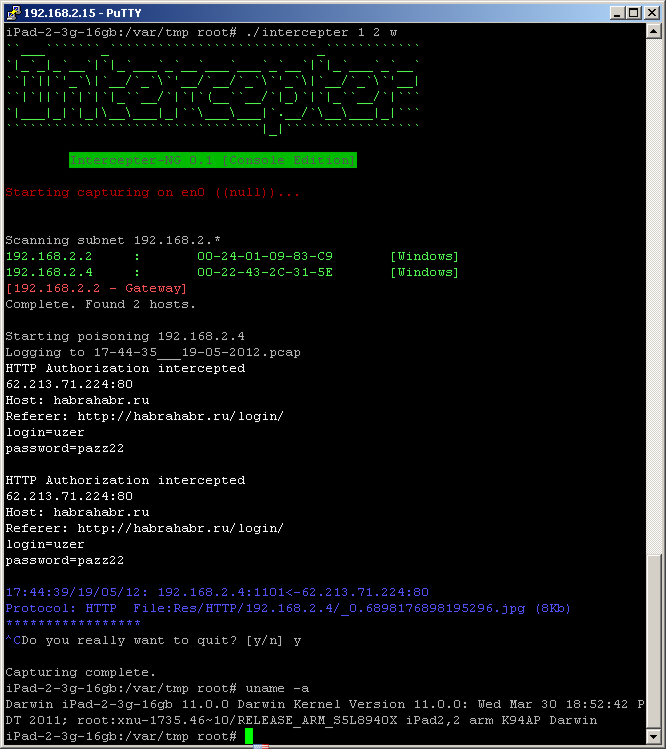
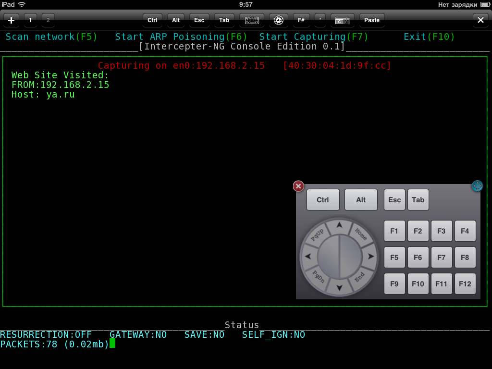
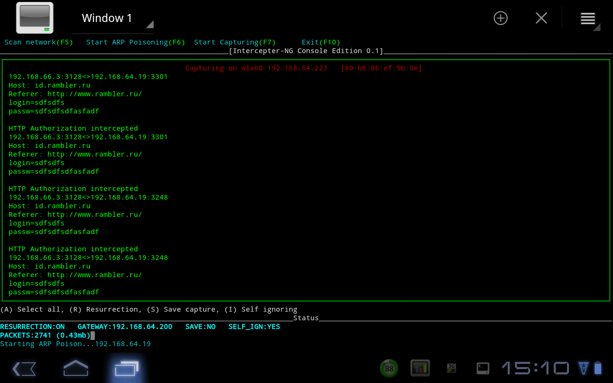
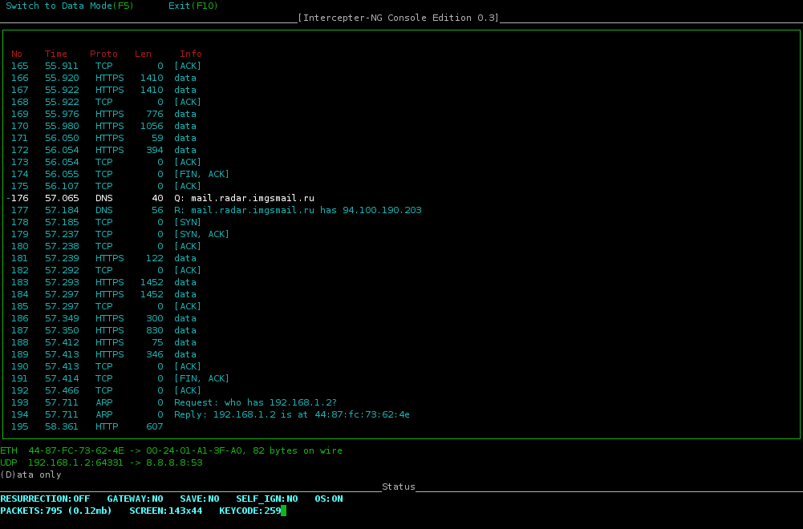
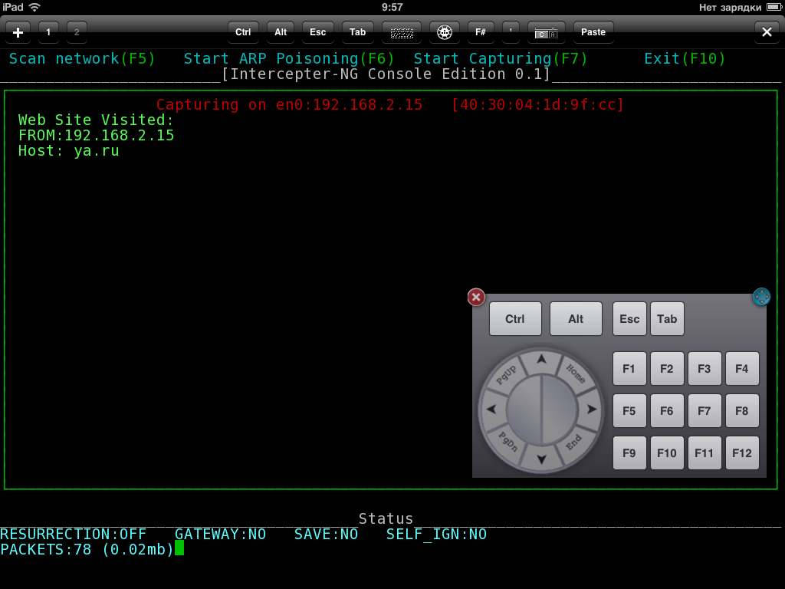
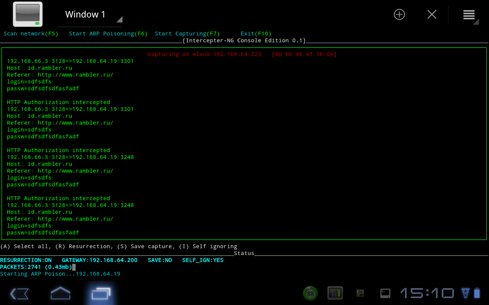
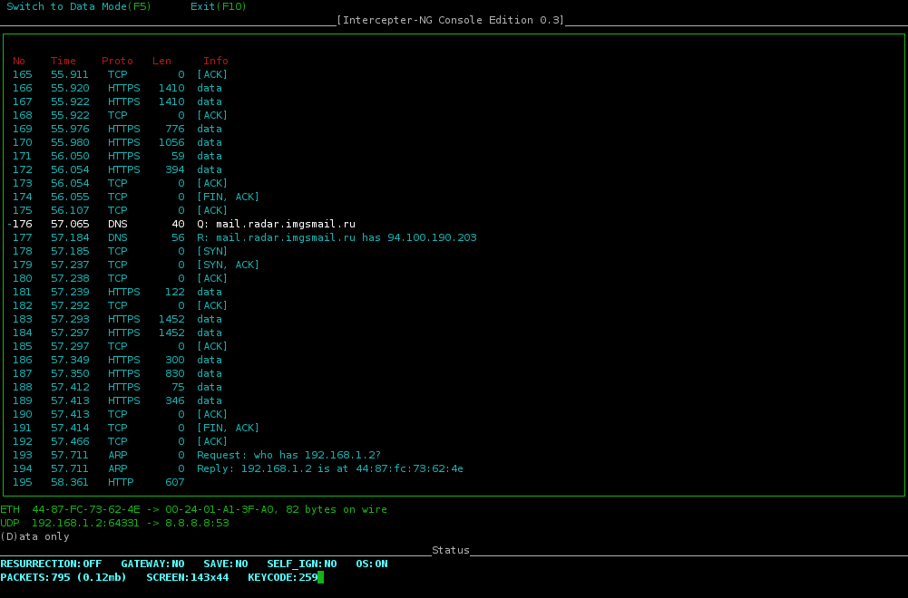
keywords: intercepter for linux, intercepter for ipad, intercepter for android
Intercepter-NG Android Edition
+ Sniffing passwords\hashes of the types:
ICQ\IRC\AIM\FTP\IMAP\POP3\SMTP\LDAP\BNC\SOCKS\HTTP \WWW\NNTP\CVS\MRA\VNC\MYSQL\ORACLE\NTLM
+ Sniffing chat messages of
ICQ\AIM\JABBER\YAHOO\MSN\IRC\MRA
+ Reconstructing files from:
HTTP\FTP\IMAP\POP3\SMTP\SMB
+ SSLStrip
+ Session hijacker (cookie grabber)
+ ARP Poisoning
+ Raw Mode
Runs on Android >=2.1 with root
Looks better on high resolution, but completely comfortable on 480×720.
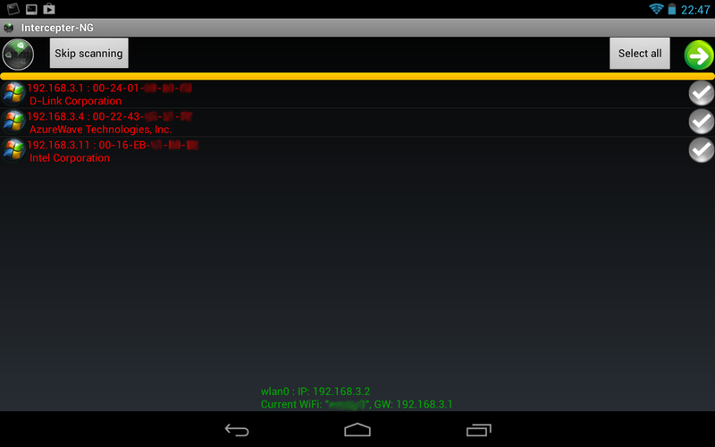
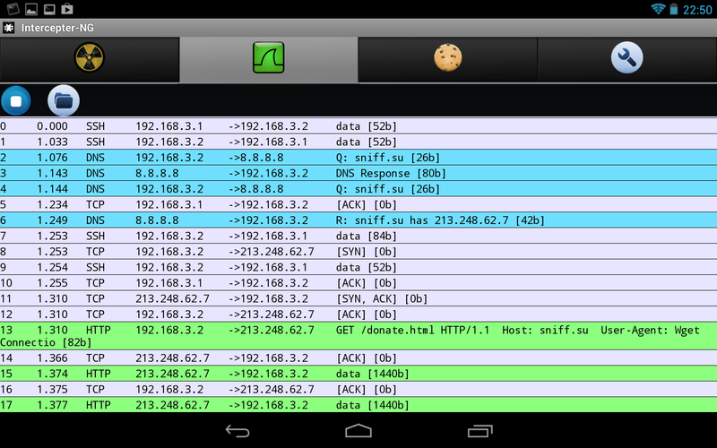
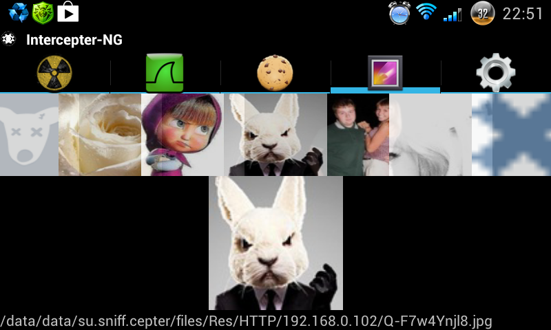
ICQ\IRC\AIM\FTP\IMAP\POP3\SMTP\LDAP\BNC\SOCKS\HTTP \WWW\NNTP\CVS\MRA\VNC\MYSQL\ORACLE\NTLM
+ Sniffing chat messages of
ICQ\AIM\JABBER\YAHOO\MSN\IRC\MRA
+ Reconstructing files from:
HTTP\FTP\IMAP\POP3\SMTP\SMB
+ SSLStrip
+ Session hijacker (cookie grabber)
+ ARP Poisoning
+ Raw Mode
Runs on Android >=2.1 with root
Looks better on high resolution, but completely comfortable on 480×720.
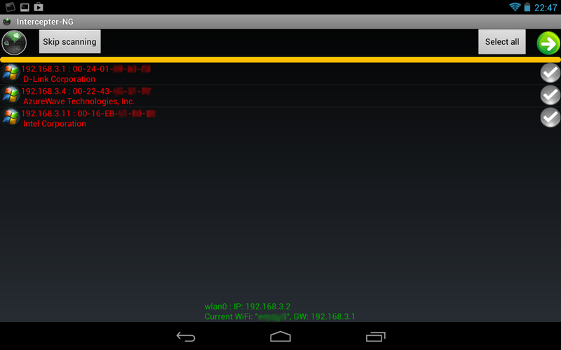
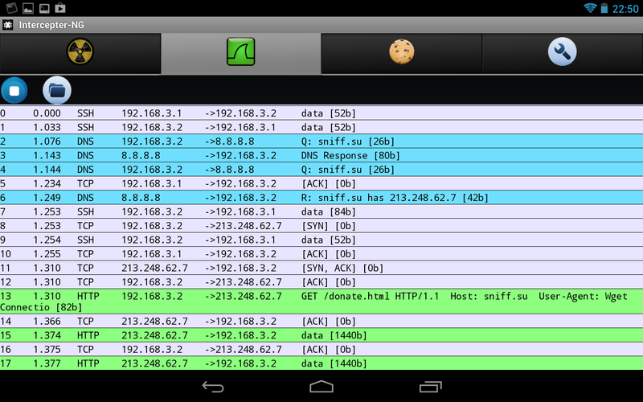
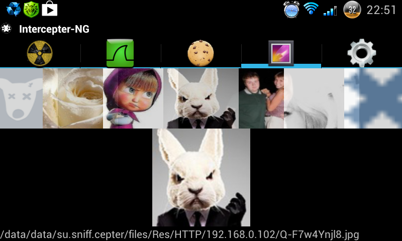
start.txt · Last modified: 2014/02/26 08:10 by intercepter
Page Tools
Except where otherwise noted, content on this wiki is licensed under the following license:
CC Attribution-Share Alike 3.0 Unported